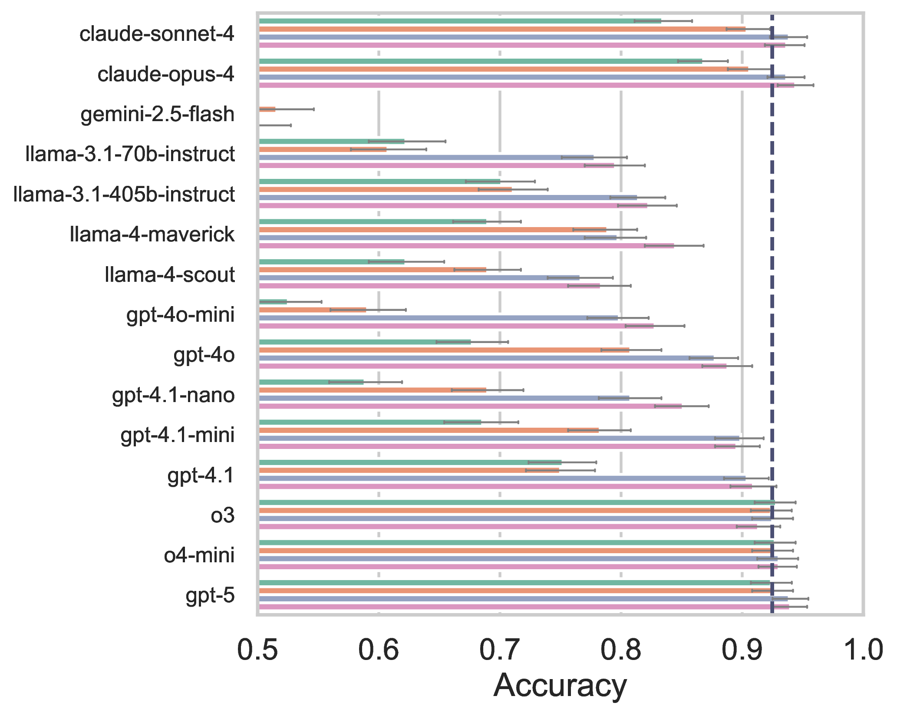
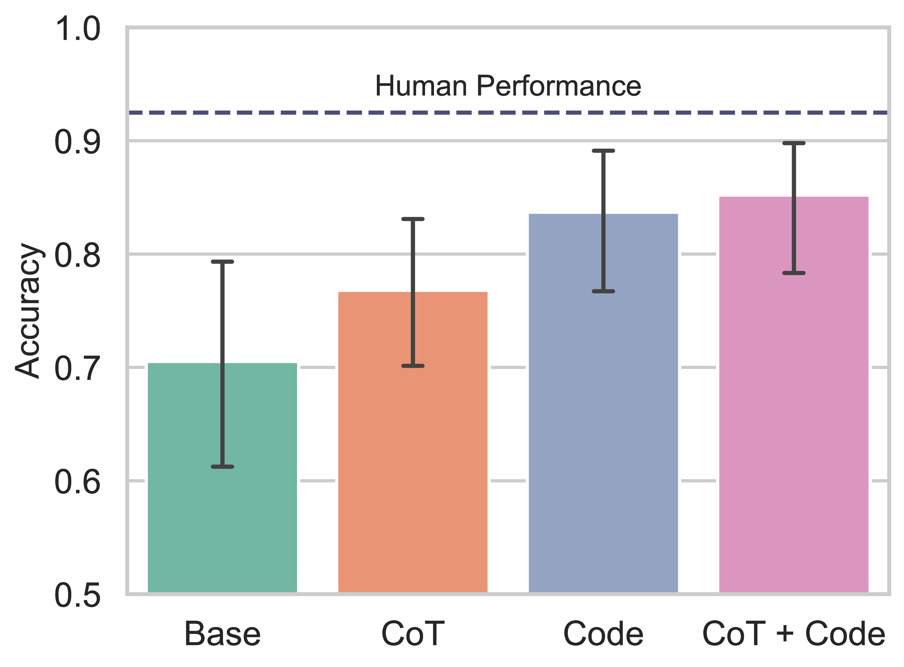

1MIT CSAIL 2MIT BCS 3Harvard SEAS
*Equal contribution
ICLR 2026
Motivation
AI agents for discovery
The promise: Many high-stakes applications of AI require forming hypotheses, gathering information, and acting under uncertainty.
The evaluation gap: Real-world discovery is hard to benchmark — LMs already have strong priors about many domains, and high-profile results are difficult to verify and reproduce.
What we need: Controlled settings where we can formalize what “rational” means and directly compare LM behavior against human and ideal baselines.
Motivation
Bayesian Experimental Design
Scenario: An analytical chemist encounters an unknown compound. Goal: identify its molecular structure $S$.
Experiments $x \in X$ probe properties of $S$:
Acid or base?Oxidation?Water-soluble?Melting point?
Update: Each observation $y$ narrows the hypothesis space via Bayes’ rule.
$x^{\star} = \arg\max_{x}\; \text{EIG}(x)$ “Is it water-soluble?” (EIG = 0.73)
Inference-scaling for experiment design: more compute at decision time → better experiments → more efficient discovery.
Approach
Instantiating the Framework
(Bridge to Battleship — to be developed)
Task
The Battleship Task
A well-studied paradigm for information-seeking behavior in humans
(Rothe, Lake & Gureckis, 2017; 2018; 2019)
Captain’s View
1
2
3
4
5
6
7
8
A
B
C
D
E
F
G
H
Spotter’s View
1
2
3
4
5
6
7
8
A
B
C
D
E
F
G
H
Captain
Fire at G2
Hit Purple ship
Captain
Is the purple ship vertical?
Spotter
No
Captain…
Many possible questions… but only some are informative…
“Are there more than 2 purple tiles remaining?”
Purple is horizontal — only 2 tiles (G1 and G3) are possible✗
“Is the red ship near the purple ship?”
Red ship location is completely unknown✓
“Any more ships in column 7?”
Given placement of orange, this is possible, but unlikely✗
“Are any ships along the edge?”
Many unknown edge tiles remain✓
Game Explorer
Task
Why Battleship?
Combinatorial complexity. Battleship has a simple representation but a large state space, similar to other challenging text- and grid-based tasks like ARC.
Minimal closed-loop BED. Battleship instantiates the full Bayesian Experimental Design loop: agents form beliefs, design experiments (questions), observe outcomes, and update.
Formalizing rationality. We can quantify the value of each question using Expected Information Gain (EIG), enabling direct comparison between human and LM behavior.
ARC-AGI 2, Chollet et al., 2025
Task
Extending the Battleship paradigm
Key extensions over prior work
(Rothe et al., 2017; 2018; 2019; Grand et al., 2024)
Full multi-turn games Two-player dialogue Python programs as questions 8×8 boards (up from 6×6) Yes/No information bottleneck
Prior work: single-turn, single-player
Our work: multi-turn, two-player dialogue
Framework
Expected Information Gain
Given board $S \in \mathcal{S}$ and question $q$ with answer $a \in \mathcal{A}$:
$\text{IG}(S;\, a) \;=\; H(S) \;-\; H(S \mid a)$ information gain
$\text{EIG}(S;\, q) \;=\; \mathbb{E}_{a}\!\big[\text{IG}(S;\, a)\big]$ expectation over answer
$\phantom{\text{EIG}(S;\, q)} \;=\; H_b(p)$ when $\mathcal{A} = \{0, 1\}$
Many possible questions… but only some are informative
Now we can quantify this intuition with EIG
✗
“Are there more than 2 purple tiles remaining?”
NNNNN
0.00
$\hat{p} = 0/5$
✓
“Is the red ship near the purple ship?”
YYYNN
0.97
$\hat{p} = 3/5$
✗
“Any more ships in column 7?”
YNNNN
0.72
$\hat{p} = 1/5$
✓
“Are any ships along the edge?”
YYNNN
0.97
$\hat{p} = 2/5$
Key insight: EIG formalizes the intuition — informative questions split the hypothesis space evenly ($p$ near 0.5), while redundant questions have predetermined answers ($p$ near 0 or 1).
Framework
What can we study with this framework?
EIG lets us formalize key behavioral questions about humans and AI agents
Asking & Answering
Do agents and humans ask informative questions? Do they provide accurate answers?
Targeted Guessing
Do they make targeted guesses under uncertainty, integrating information from answers?
Resource Rationality
Do they make effective use of available questions under a limited resource budget?
Experiments and Results
Roadmap
Human Study
BattleshipQA dataset
Collect human–human game data and establish behavioral baselines for information-seeking.
Experiment 1: SpotterQA
Answering questions
Can LMs answer grounded yes/no questions about the board?
Experiment 2: CaptainQA
Asking questions & playing
Can LMs ask the right questions and play rationally?
Human Study
Collecting the BattleshipQA dataset
Human–human games on Prolific to study information-seeking behavior and build an evaluation dataset.
42
Participants (21 pairs)
126
Game trajectories
931
Gold-labeled yes/no questions
18
Unique boards (8×8, 4 ships)
Each game: up to 15 questions and 40 shots, with Captains choosing when to ask vs. shoot
Mean: 8.2 questions and 28.3 shots per game
Gold annotations: all 931 questions independently labeled by expert annotators; only questions with 100% inter-annotator agreement retained
Human Study
How do people play?
(a) Different players show diverse explore/exploit strategies on the same board; colors indicate different players.(b) Asking more questions correlates with better targeting performance ($\rho = 0.684$, $p < 0.002$).
Human Study
How do people play?
Human accuracy: Spotters answer questions correctly 92.5% of the time w.r.t. gold labels. → Can LMs match this?
Experiment 1: SpotterQA
Can LMs answer grounded questions?
Human accuracy: Spotters answer questions correctly 92.5% of the time w.r.t. gold labels. → Can LMs match this?
Dataset: 931 gold-labeled yes/no questions from BattleshipQA
Models: 15 LMs from Anthropic, Google, Meta, and OpenAI
Hypothesis test: 2×2 design
Language-based reasoning vs. code-based reasoning
Direct answering vs. chain-of-thought (CoT)
Base LM Code CoT CoT + Code
SpotterQA
Grounding questions by generating code
Captain
Are at least two of the four ships located entirely within columns 1–4?
Spotter (thinking)
Let me translate this to code and execute it against the board…
Spotter Yes
Key idea: Translating to code grounds the answer in the actual board state, avoiding hallucination and misinterpretation.
def answer(true_board, partial_board) -> bool:
# Columns 1-4 = zero-based indices 0-3
max_allowed_col = 3
ship_ids = [s for s in np.unique(true_board) if s > 0]
count_within = 0
for sid in ship_ids:
cols = np.where(true_board == sid)[1]
if cols.size > 0 and cols.max() <= max_allowed_col:
count_within += 1
return count_within >= 2
# >>> answer(true_board, partial_board)
# True
Experiment 1: SpotterQA
Can LMs answer grounded questions?

(a) Wide accuracy range across 15 LMs (52.5% – 92.8%).

(b) CoT + Code gives +14.7% absolute over base LM.
Base LM CoT Code CoT + Code
Experiment 2: CaptainQA
Can LMs ask the right questions and play rationally?
Method
Monte Carlo inference with a world model
Sample plausible boards consistent with observations, then marginalize to get a tile-level belief.
Observed board→
Hypothesis samples via SMC→Approximate belief $\pi_t$
Experiment 2: CaptainQA
Three Bayesian strategies for rational agents
Belief-aware policies: what to ask, where to shoot, and when to explore vs. act.
InfoMax Questions
$Q_{\text{Bayes}}$
Sample a set of questions, then pick the one that maximizes expected information gain.
Not Battleship-specific — generalizes to information-seeking games with combinatorial hypothesis spaces
Takeaways
Necessary but not sufficient
Good performance on controlled tasks like Battleship is a prerequisite for real-world discovery. If an agent can't explore rationally here, we shouldn't trust it in the clinic or the lab.
Formalizing rationality
In science and medicine, we need to define and measure what rational exploration looks like. Environments like this let us compare LM behavior against human and ideal Bayesian baselines.
World models as tools
Our symbolic world model is an interactive simulator: the agent tests hypotheses by running programs against sampled possible worlds. This connects to sandboxed coding environments, dynamic world models (e.g., Genie), and other forms of thinking before acting.
From games to the real world
The same principles — asking informative questions, acting on evidence, balancing exploration and exploitation — apply to agentic coding, medical diagnosis, scientific discovery, and beyond.